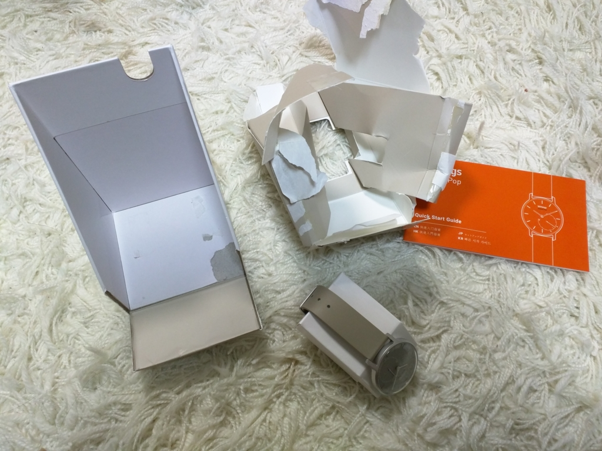
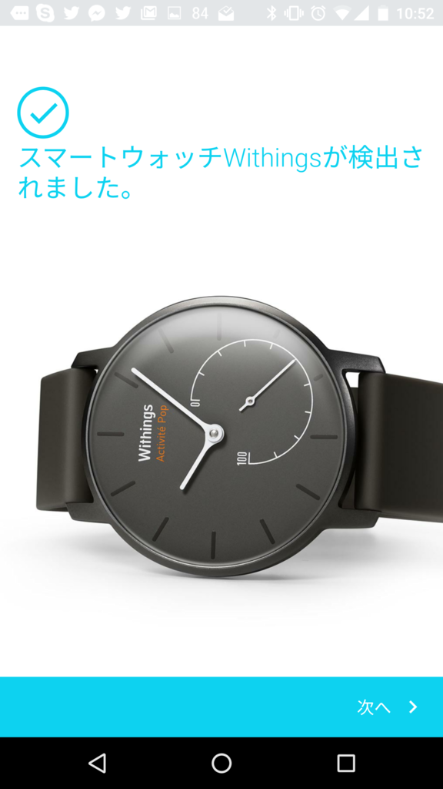
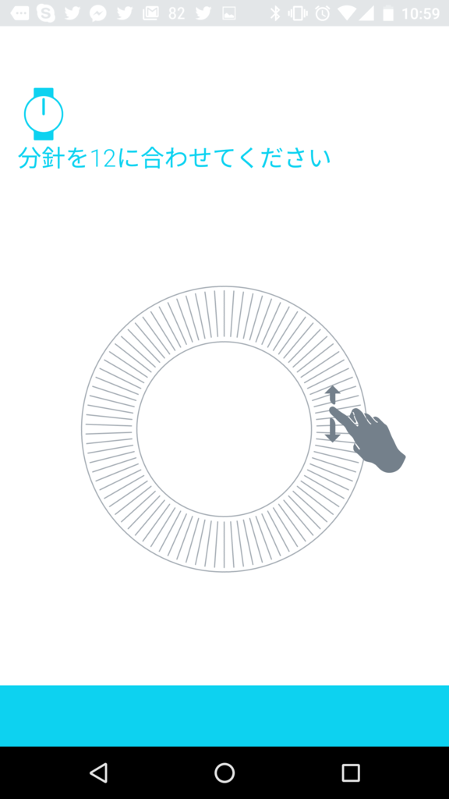
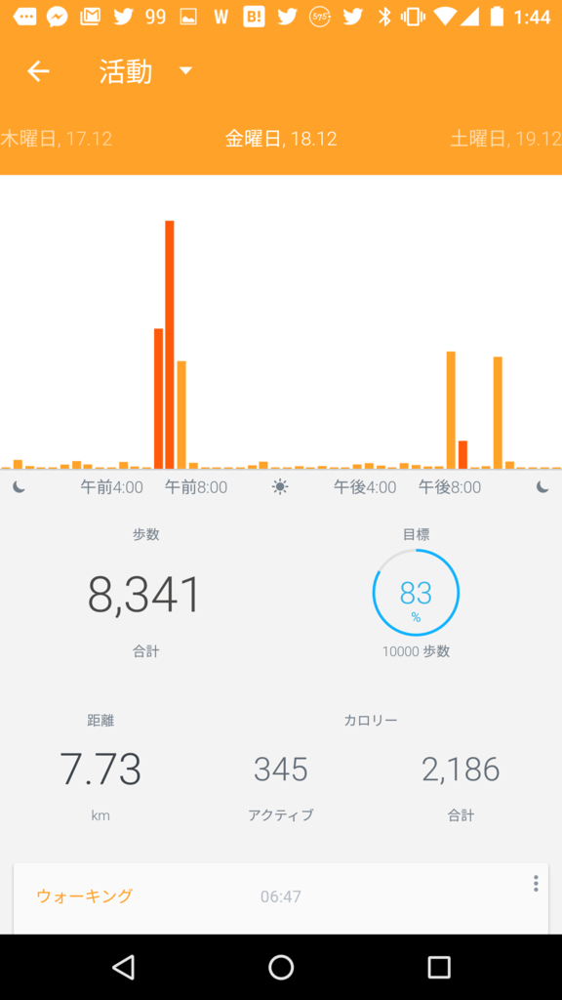
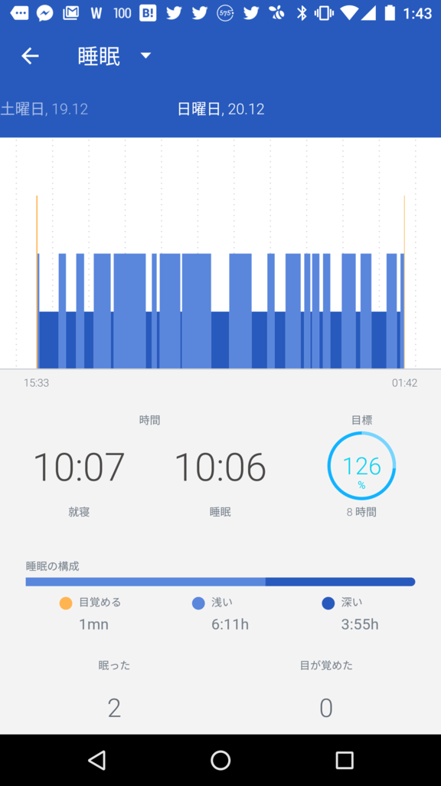

ランニング三日坊主を脱するため、ヘルスウォッチ Withings Activite Pop を買った。
執筆日時：
この前、いろいろ買いこんでランニングを志したことを書きましたが。すまん、あれから2回しか走りに行かなかった。
- だって、雨降ったし～
- 最近超早寝早起き（夜8時就寝、夜中目覚める）で朝ヒマなんだけど、朝走ったら昼眠くなるかもだし～
- そんなこんなしてるうちに福岡行く用事とか、岡山行く用事があってぇ～
――ｺﾞﾒﾝﾅｻｲｺﾞﾒﾝﾅｻｲｺﾞﾒﾝﾅｻｲ！！
これではほんまにダメ人間になると思ったので、さらに物欲駆動を推し進めることにした。

それがこれだ！

Withings スマートウォッチ Activité Pop Shark Grey【日本正規代理店品】
- 出版社/メーカー: Withings
- 発売日: 2015/07/30
- メディア: エレクトロニクス
- この商品を含むブログを見る
こういうカテゴリーの製品を何というのかよく知らんのやけど……Apple Watch みたいなスマートウォッチほど高機能じゃないけど、そこそこスマートなヘルス時計だ。
- 健康関連機能：万歩計、睡眠の計測（足りない機能はスマホアプリで補う感じ）
- 目覚まし機能：ぶるぶる震える。時間はスマホでセットできるけど、1つだけ。時計をダブルタップすると針がウィーンって動いて、目覚ましがセットされた時間を示す
- 省電力：Apple Watch は1日もたずに死ぬらしいが、これは機能削ったおかげか、ボタン電池で半年以上もつ
- 防水：プールで泳ぐぐらいなら大丈夫そう
お値段は2万円ほど。自分は Amazon のタイムセールで1.2万円で買った。今見たらまたタイムセールやってたので、買うなら今かもね。

封を開けていきなり困ったのだが、箱の開け方がわからん。めんどくさいので、破壊した。こういう箱の開け方をしたのは、Windows Vista 以来かもしれん。

さっそくつけてみたけど、デザインはシンプルで大変よろしい。右下の盤は、万歩計やな。たとえばアプリで目標1万歩って入力しとくと、ここに達成率が表示される。なるほとど。
正直、チープな印象は否めず、上位の Pop じゃない方（たぶん5万か6万ぐらい）がちょっとほしくなったが、オシャレでつけるものではなし。あくまでも運動するときにつけるものだから、壊れても諦められる値段っていうのはとても大事だと思う。
 
設定はアプリから行う（iOS/Android）。最初に針合わせを行うのだけど、スマホの画面をなぞると、時計の針がビミョーンと動くのが楽しい。思わずグリグリ回して遊んでしまった。
 
アプリはこんな感じ。ちなみに、初日の歩数は250歩だった。うちの部屋は他人から見れば一見乱雑で汚いかもしれんが、これはなるべくカラダを動かさずに、より多くのものに手が届くように設計された結果だ。しかし、その効率性がアダとなり、たった1日250歩で暮らせるという運動不足を誘発する空間の形成を招いたのだ……。
――事を成すに当たっては、まず状況を把握せよ。
Withings Activite Pop はそれを思い出させてくれた。さすがにもうちょっと動かないと、そのうち足がヘソまげて動かなくなるだろう。1日10時間も寝てる場合じゃなかった。
おかげで最近は多少、外に出るようになった。どうやら、自分はただ走るだけのランニングは嫌いなようだ。なので、あれを観に行こう、通ったことがない道を歩いてみようって感じで、毎日ちょっとした目標を立てて頑張ってる（写真は徒歩15分ぐらいのところにある護国神社）。近所を歩きつくしたらどうするかは、またそのときになってから決めようと思う。